DTC 82-14
DTC 82-14: No Signal from the Front Passenger's Weight Sensor (front inner side) (4-door)1. Erase the DTC memory.
2. Read the DTC.
Is DTC 82-14 indicated?
YES - Go to step 3.
NO - Intermittent failure, system is OK at this time. Go to Troubleshooting Intermittent Failures.
3. From INSPECTION menu on the HDS, select SWS DTC CHECK.
Is another DTC also indicated?
YES
- DTC 14-11: Short to power in the ODS unit harness; replace the ODS unit harness.
- DTC 14-12: Go to step 4.
- DTC 14-13: Go to step 11.
- DTC 14-14: Go to step 19.
NO - Intermittent failure, system is OK at this time. Go to Troubleshooting Intermittent Failures.
4. Turn the ignition switch OFF.
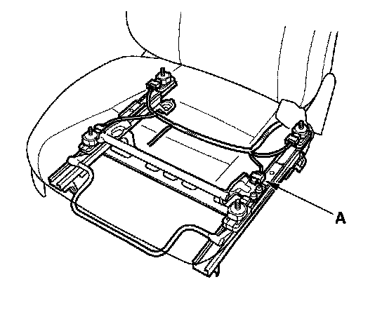
5. Disconnect the ODS unit harness 3P connector (A) from the front passenger's weight sensor (front inner side).
6. Read the DTC.
Is DTC 14-12 indicated?
YES - Go to step 7.
NO - Faulty front passenger's weight sensor (front inner side); replace the front passenger's weight sensor.
7. Turn the ignition switch OFF.
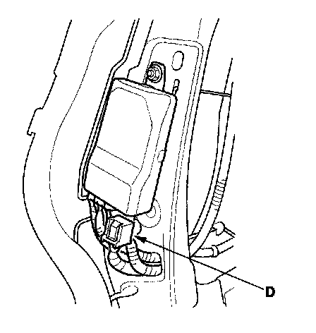
8. Disconnect the ODS unit harness 18P connector D from the ODS unit.
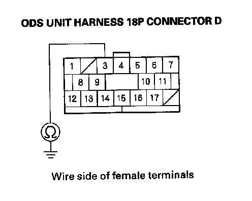
9. Check resistance between the No. 3 terminal of the ODS unit harness 18P connector D and body ground. There should be an open circuit or at least 1 Mohm.
Is the resistance as specified?
YES - Go to step 10.
NO - Short to ground in the ODS unit harness; replace the ODS unit harness.
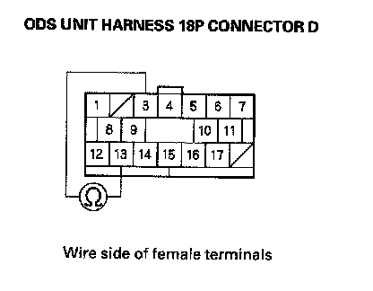
10. Check resistance between the No. 3 terminal and No. 13 terminal of the ODS unit harness 18P connector D. There should be an open circuit or at least 1 Mohm.
Is the resistance as specified?
YES - Faulty ODS unit; replace the ODS unit.
NO - Short to ground in the ODS unit harness; replace the ODS unit harness.
11. Turn the ignition switch OFF.
12. Swap the connections between the front passenger's weight sensor (front inner side) and the front passenger's weight sensor (rear inner side).
13. Read the DTC.
Is DTC 14-13 indicated?
YES - Go to step 14.
NO - Faulty front passenger's weight sensor (front inner side); replace the front passenger's weight sensor.
14. Turn the ignition switch OFF.
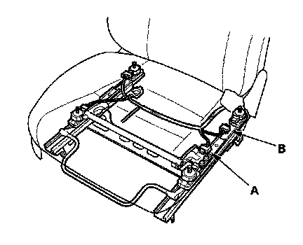
15. Disconnect the front passenger's weight sensor (front inner side) connector (A) and front passenger's weight sensor (rear inner side) connector (B).
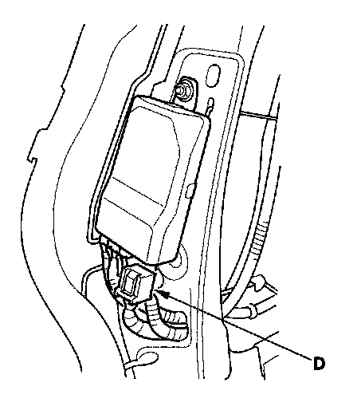
16. Disconnect the ODS unit harness 18P connector D from the ODS unit.
17. Turn the ignition switch ON (II).
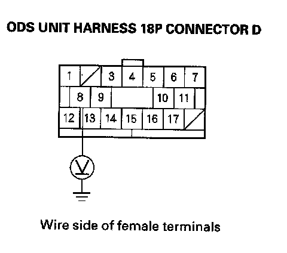
18. Check for voltage between the No. 8 terminal of the ODS unit harness 18P connector D and body ground. There should be 1 V or less.
Is the voltage as specified?
YES - Faulty ODS unit; replace the ODS unit
NO - Short to power in the ODS unit harness; replace the ODS unit harness.
19. Turn the ignition switch OFF.
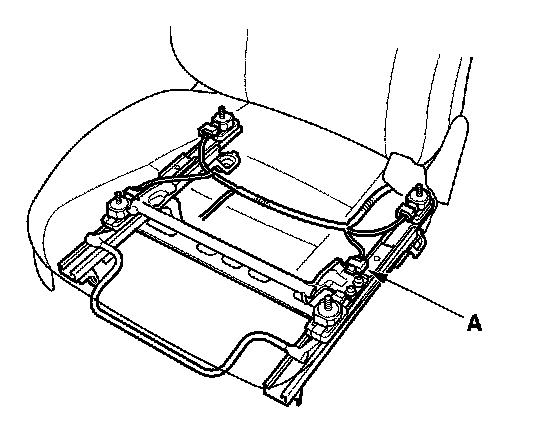
20. Disconnect the ODS unit harness 3P connector (A) from the front passenger's weight sensor (front inner side).
21. Read the DTC.
Is DTC 14-14 indicated?
YES - Go to step 22.
NO - Faulty front passenger's weight sensor (front inner side); replace the faulty sensor.
22. Turn the ignition switch OFF.
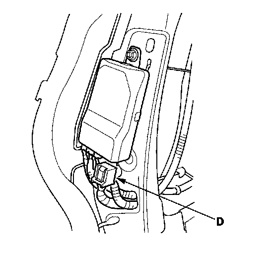
23. Disconnect the ODS unit harness 18P connector D from the ODS unit.
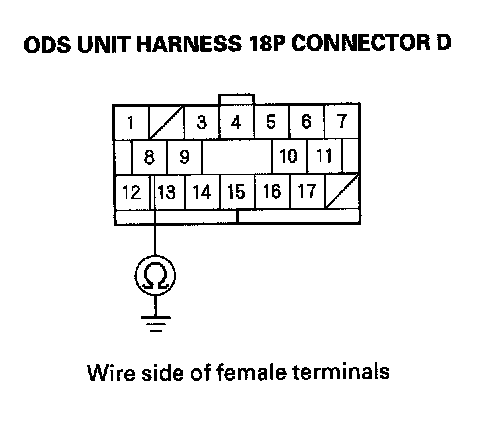
24. Check resistance between the No. 8 terminal of the ODS unit harness 18P connector D and body ground. There should be an open circuit or at least 1 Mohm.
Is the resistance as specified?
YES - Go to step 25.
NO - Short to ground in the ODS unit harness; replace the ODS unit harness.
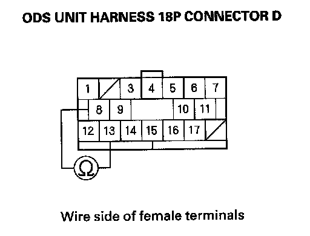
25. Check resistance between the No. 8 terminal and No. 13 terminal of the ODS unit harness 18P connector D. There should be an open circuit or at least 1 Mohm.
Is the resistance as specified?
YES - Faulty ODS unit; replace the ODS unit
NO - Short in the ODS unit harness; replace the ODS unit harness.